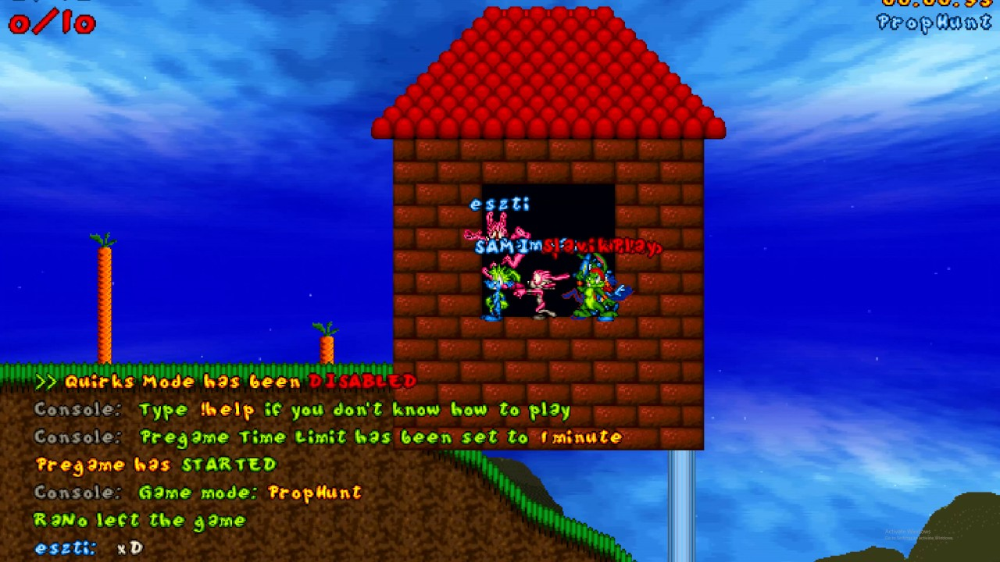

<!DOCTYPE html>
<html lang="en">
<head>
    <meta charset="UTF-8">
    <meta name="viewport" content="width=device-width, initial-scale=1.0">
    <title>Document</title>
</head>
</html><!DOCTYPE html>
<html lang="en">
<head>  <link rel="preconnect" href="https://fonts.googleapis.com">
    <link rel="preconnect" href="https://fonts.gstatic.com" crossorigin>
    <link href="https://fonts.googleapis.com/css2?family=Inter:wght@100;300&family=Rosarivo:ital@1&display=swap" rel="stylesheet">
    <meta charset="UTF-8">
    <meta name="viewport" content="width=device-width", initial-scale="1.0">
    <link rel="stylesheet" href="css/Gaming.css"></head>
    <title>Document</title>


</head>
<body>
     <main>
        <header>
            <a style="text-decoration: none;"href="index.html"></a>
        <ul>
      <a style="text-decoration: none;"href="Trama.html"> <h4>TRAMA</h4></a>
      <a style="text-decoration: none;"href="Scheda personaggi.html"><h4>PERSONAGGI</h4></a>
       <a style="text-decoration: none;"href="Episodi selezionabili.html"><h4>EPISODI</h4></a>
       <a style="text-decoration: none;"href="Dinamiche del gioco.html"><h4>DINAMICHE</h4></a>
       
        </ul>
</header>
<br>
      <h1>
          GAMING
      </h1>
      <br>


      

      <br>
      <br>
      <br>
      <br>
      
      <p style="line-height:30px;"> Nel gaming le opzioni sul multiplayer includono la possibilità di giocare sullo stesso pc, fino a 4 giocatori. Giocando sullo stesso computer lo schermo viene diviso e ogni settore inquadra uno dei giocatori che possono utilizzare fino a 2 combinazioni di tasti e/o fino a 4 joystick.
         <br>
        <br>
        <br>
        
         

         <p style="line-height:30px;"> Esistono 5 modalità di gioco multigiocatore:
          <br> <br><br> 

          <p style="line-height:30px;">
         1- Cooperativo (si affrontano gli stessi livelli del giocatore singolo, ma insieme)
         <br> <br>

 <p style="line-height:30px;">
    2- Battaglia (i giocatori si scontrano tramite la divisione su schermo)
    <br> <br>

<p style="line-height:30px;">
    3- Gara di velocità
    <br> <br>

<p style="line-height:30px;">
    4- Cattura la bandiera
    <br> <br>

<p style="line-height:30px;">
    5- Caccia al tesoro
    <br> <br>


    <body>

    </head>

